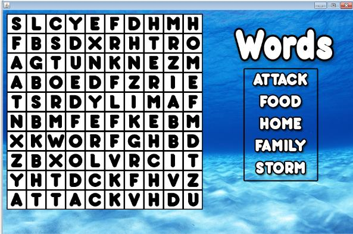
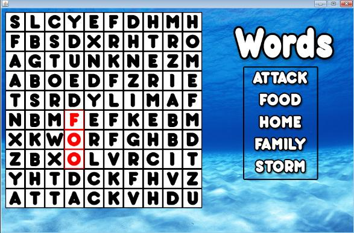
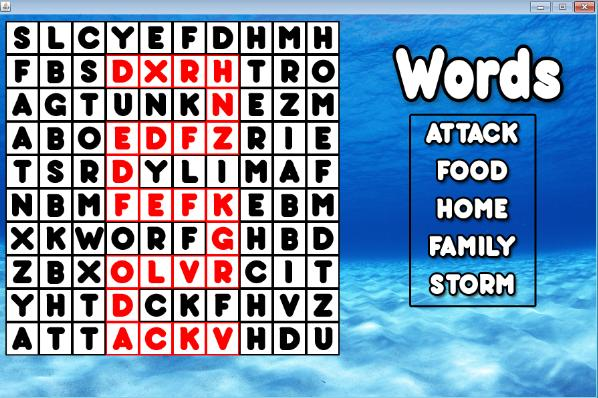
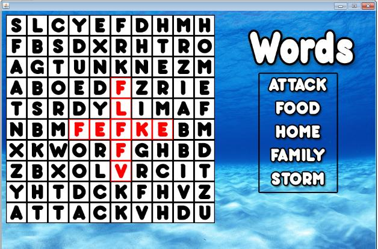
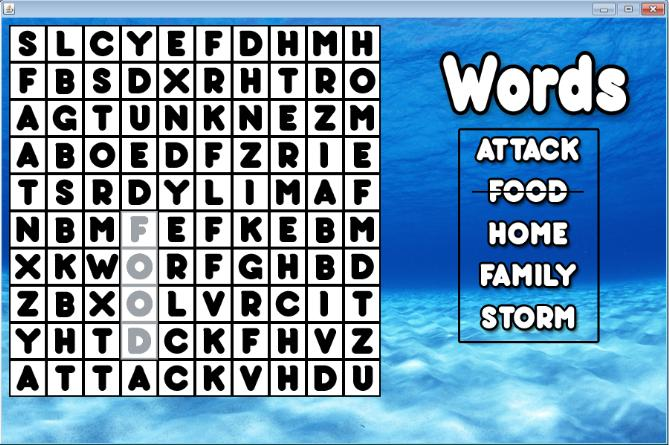
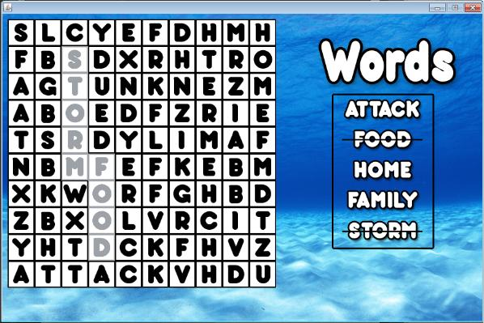

Word Search: Objective
In the word search prefixing each level, you must find a word listed inside of the word bank provided. Depending on the word found, you will be taken to a different level, each adding a unique aspect to the story of Felix.
The Word Search Screen
When you hit the 'Play' menu of the main menu you are taken to the above screen. This is the word search screen, and it is where you will begin every level (whether you like it or not). Completing the game consists of finding every single word, and playing each subsequent level.

Oh man, this looks like a toughy!
Finding Words
A tile can only be selected if it is directly adjacent to the last tile you have clicked. This means you cannot highlight all corners individually (what an inconvenience, I know!). Above are some examples to demonstrate that tiles can only be highlighted if they lie adjacent to each other.

When a tile is clicked, it is highlighted in a red colour.

Ouuu, a word snake!

Out in all directions, but no diagonals!
Completing the Word Search
After a word has been found, and you have successfully competed the level, you will see that the word search screen has been updated. The word you used to select the level will not be grayed out, and you will not be able to highlight it anymore. It will also be crossed out in the word box, if you need a reminder not to look for it anymore.

A single word found, not too shabby.

Two whole words, that 40% of the puzzle completed!